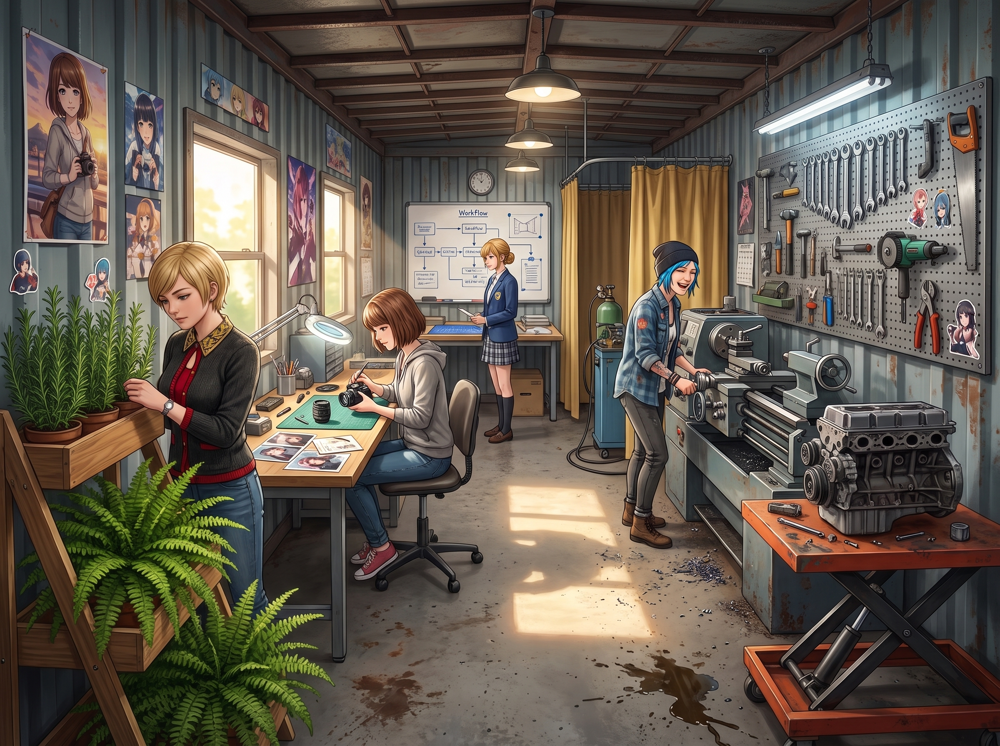

二號車廂完工

歷經數週的破拆、規劃與裝修，工坊隔壁那節廢棄的貨運車廂，終於蛻變成了「青年機械教室」。
Chloe 主導的重型機械區裡，車床、氬弧焊工作島與液壓升降台一字排開，冷軋鋼工具牆按拆解、切削、測量分類懸掛，秩序井然；Max 的攝影與精密儀表修復桌設在採光最好的側窗邊，配備了防靜電橡膠墊與放大鏡燈；Victoria 規劃的動線劃分明確，所有電纜線都收進了地面線槽；Kate 打理的植物防塵緩衝帶則在入口兩側鋪展開來，波士頓腎蕨與直立迷迭香在階梯式花架上舒展著翠綠的葉片，替這節冷硬的鋼鐵車廂添上一抹柔和的呼吸。
整座空間全部完工啟用，正式準備迎接第一批學員的到來。
週四下午，波特蘭東區社區中心的會議室裡，Victoria 穿著一襲俐落的米白色雙排扣西裝，正在筆記型電腦前逐一審核「Price & Chase 青年機械教室」第一批實訓學員的申請表。
門口突然傳來兩聲節奏沉穩、極有分寸的敲門聲。
走進來的是一位穿著深色夾克、戴著老花鏡、手裡拿著一本泛黃平裝書的黑人長者——Robert McCall。他身後跟著一個眼神有些閃躲、穿著寬大衛衣、手裡死死抓著一本畫冊的年輕黑人小伙 Miles。
一、 氣場碰撞：名媛與「頂級義警」的照面
Victoria 抬起頭，習慣性地帶著審視的目光打量兩人。然而，當她的視線對上 Robert 那雙深邃、平靜得宛如深潭般的眼睛時，她敏銳的名媛直覺瞬間警鈴大作——眼前這個男人看似普通社區司機，但舉手投足間帶著一種極致的精確與無形壓迫感。
「下午好，女士。」Robert 摘下平頂帽，微微頷首，聲音低沉且富有磁性，「我是 Robert McCall。聽社區中心的負責人說，這裡有一個由年輕藝術家與技工創辦的實訓項目，正在尋找願意重新掌握自己雙手與未來的年輕人。」
「我是 Victoria Chase，基金會的負責人。」Victoria 雙手交疊在桌上，迅速調整了語氣，維持著得體而專業的姿態，「我們的名額非常有限，主要面向有改過意願或在傳統教育中迷失方向的青年。這位是……？」
「這是 Miles。」Robert 轉過身，單手輕輕搭在年輕人的肩膀上。那隻手沉穩有力，帶著長輩特有的包容與威嚴，「他很有繪畫天賦，但前段時間在街頭差點走偏了路。我答應過他，要幫他找到一個能讓他專注把才華變現、而不是用拳頭和噴漆罐浪費生命的地方。」
Miles 侷促地咬了咬嘴唇，在 Robert 鼓勵的目光下，將手裡那本畫滿了城市速寫與精密機械草圖的速寫本輕輕推到 Victoria 面前。
二、 畫冊審核：直擊心靈的藝術天賦
Victoria 戴上金絲眼鏡，翻開了畫冊。
原本冷靜嚴肅的神情在翻過兩頁後悄然化開——速寫本上的線條大膽、粗獷卻極具結構張力。有街頭老建築的磚石紋理，也有老舊發動機剖面的狂野透視，甚至還有幾幅用炭筆捕捉的社區居民肖像，光影處理極具靈氣。
「透視基本功扎實，對金屬光影的捕捉比西雅圖藝術學院很多一年級生還要敏銳。」Victoria 合上畫冊，抬頭看向 Miles，「但在我們這裡，你不會只握畫筆。你得學會使用角磨機、車床、甚至在滿是機油和鐵屑的車廂裡拆解兩噸重的發動機。你能吃得了這種苦嗎？」
「我……我不怕髒，也不怕累，女士。」Miles 握緊了拳頭，眼神終於迎上了 Victoria 的目光，「McCall 先生幫我洗乾淨了公寓外牆的塗鴉，他說……如果我連自己的手都掌控不好，就沒資格談未來的畫作。」
三、 巧遇主角組：當硬核老兵遇上藍髮暴徒
就在這時，會議室的門被一把推開。
Chloe 嚼著口香糖、腰間掛著兩把重型活動扳手晃了進來，身後跟著捧著相機的 Max 和端著茶盤的 Kate：「喂，Chase！二號車廂的植物架全裝好了，名單定下來沒——」
話音未落，Chloe 的目光瞬間落在了站在一旁的 Robert 身上。
氣氛瞬間陷入了三秒鐘的奇妙凝固。
Chloe 雖然平時玩世不恭，但在阿卡迪亞灣被 David Madsen 操練多年的本能讓她一眼看出——眼前這位老爺子站立的重心、垂在身側的手指微曲角度，簡直比 David 當年在海軍陸戰隊還要硬核十倍！
Robert 轉過頭，目光平靜地掃過 Chloe 工裝褲上的工具配置、Max 脖子上的機械相機、以及 Kate 圍裙上的迷迭香葉子，嘴角掠過一抹極淡卻無比洞悉的微笑。他低頭看了看手腕上的計時腕錶，精準地說道：
「扳手卡槽磨損均勻，相機鏡頭保養得當，身上有薰衣草和松木的氣味。看來這間工坊的規矩很硬，但心很軟。」
「老天……」Chloe 忍不住後退了半步，抓了抓藍色碎髮，轉頭對著 Max 咬耳朵，「長官，這老爺子是誰？我怎麼覺得他能在三秒內用手裡那本平裝書把我整個人拆成零件？」
Max 扶了扶眼鏡，對著 Miles 和 Robert 露出了溫暖的微笑；Kate 則體貼地走上前，為兩人遞上了剛泡好的溫熱蘋果肉桂茶。
四、 名單敲定與 Robert 的承諾
Victoria 嘴角勾起一抹勝券在握的名媛微笑，優雅地在申請表第一行簽下了自己的名字，隨後遞給 Chloe 蓋上了工坊的黃銅齒輪印章：
「Miles，下週一上午九點，帶上你的工作靴和速寫本到東區舊鐵道二號車廂報到。你的第一課是由那位藍頭髮的暴力技工教你操作冷軋鋼車床，第二課是由 Max 教你如何把你的畫作製版成大畫幅版畫。」
Miles 眼睛一亮，激動得連忙點頭：「謝謝！謝謝 Chase 女士！謝謝大家！」
Robert 雙手接過錄取確認函，將那本平裝書夾在腋下，對著四個女孩微微躬身致意：
「謝謝你們為這個年輕人保留了一扇門。如果工坊日後遇到任何……『難以用普通法律流程解決的麻煩』，隨時可以打我留下的電話。」
看著 Robert 帶著 Miles 步履穩健地走出社區中心大門，Chloe 抹了一把額頭並不存在的冷汗，對著 Victoria 比了個大拇指：
「Chase，老娘收回以前說妳眼光差的所有話——妳今天直接給咱們工坊招來了一個未來的大師級弟子，順便還給咱們找了個滿級退休特工當靠山！！」